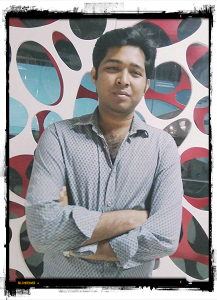

I am an outgoing and energetic (ask anybody) young professional, seeking a
career that fits my professional skills, personality, and murderous tendencies.
My squid-like head is a masterful problem solver and inspires fear in who gaze upon it.
I can bring world domination to your organization.
- Experience
-
RTsoftBDAndroid Developer -- February 2017 to July 2017
- Analysis the requirement
- Design UI
- Develop the app
-
- Projects
-
QAtm [Nearest ATM & Bank Finder]
Position: Group Leader & Developer
Technology: Android, SQLite as Database
University Management System
Position: Group Leader
Technology: ASP.NET MVC, MS SQL as Database
- Published Paper
- Md Riasath Arif Prodhan, Noor Nabiul Alam Siddiqui, and Albert Rozario,"Advanced
Management System for Educational Institutions", International Journal of Scientific & Engineering
Research, Volume 7, Issue 2, February-2016
- Education
-
Master of Science (M.Sc.) in Computer Science2016 - present
Jahangirnagar University, Dhaka
Passing Year: 2017
CGPA: [Running]
-
Bachelor of Science (B.Sc.) in Computer Science and Engineering2012 - 2016
Daffodil International University, Dhaka
Passing Year: 2016
CGPA: 3.14 out of 4.00
-
Higher Secondary Certificate (H.S.C Vocational)2008 - 2011
Major in Electrical
Rangpur Technical School & Collage, Rangpur
Passing Year: 2011
CGPA: 4.28 out of 5.00
-
Secondary School Certificate (S.S.C Vocational)2006 - 2008
Major in Electrical
Dinajpur Technical Training Center, Dinajpur
Passing Year: 2008
CGPA: 4.27 out of 5.00
- Training
- “Web Application Development – DOT NET at BASIS Institute of Technology &
Management (BITM).” 3 month training on Basic C#, OOP Basic, MS SQL Server, ASP.Net Web
form, ASP.Net MVC.
“Java at Belancer.” Training on Basic Java, OOP Basic.
- Extracurricular Activities
- ➔ Student Prefix of Daffodil International University
➔ Treasurer of Daffodil International University Photography Society.
➔ Promoting science education utilization hometown connectivity of Daffodil International
University. (Project of Bangladesh Freedom Foundation)
➔ Online Administrator of Daffodil International University English Literary Club.
- Special Abilities
- ➔ Good Presentation Skills.
➔ Independent, persevering and compatible.
➔ Well cooperated in teamwork.
➔ Work well under pressure and group effort.
➔ Work well at night with extensive field mobilization